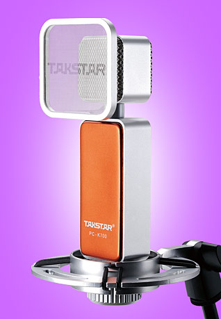

最新版麦克风开售啦！提前抢购有好礼！
2021-08-05 09:27:23

麦克风是将声音信号转换为电信号的能量转换器件。分类有动圈式、电容式、驻极体和最近新兴的硅微传声器，此外还有液体传声器和激光传声器。大多数麦克风都是驻极体电容器麦克风，其的工作原理是利用具有永久电荷隔离的聚合材料振动膜。
常见的商用麦克风类型有电容式麦克风、晶体麦克风碳质麦克风以及动态麦克风。常用的电容式麦克风使用的能量源有两种：直流偏置电源和驻极体薄膜。这两种电容式麦克风和晶体麦克风都是将声能转换为电能，产生一个变化的电场。碳质麦克风采用直流电压源，通过声音振动改变其电阻，从而将声信号转换为电信号。